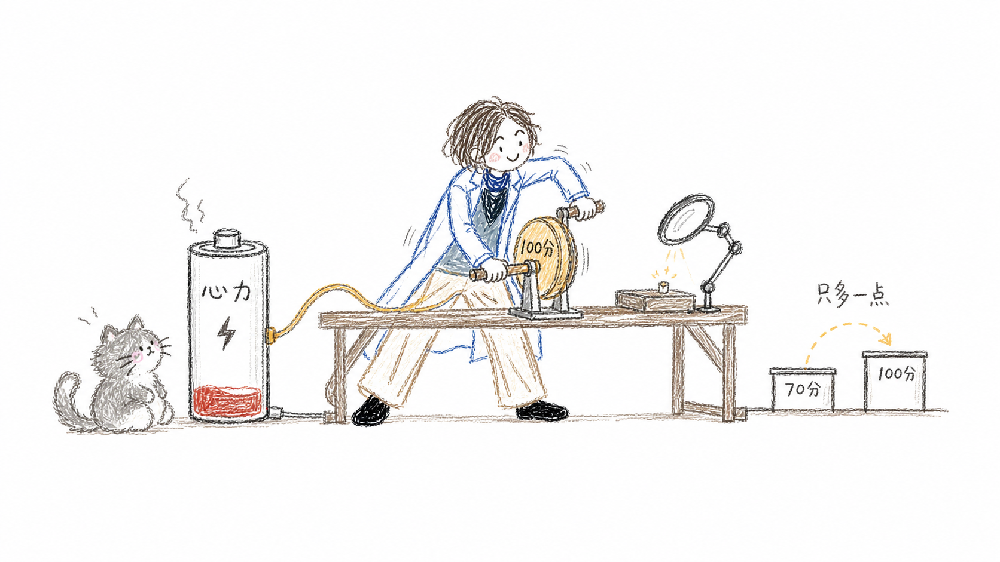
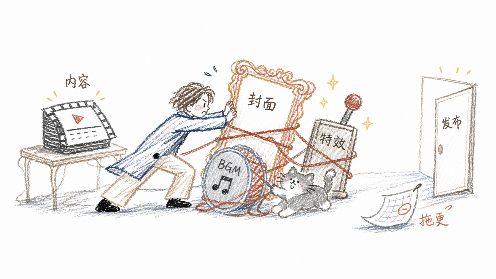
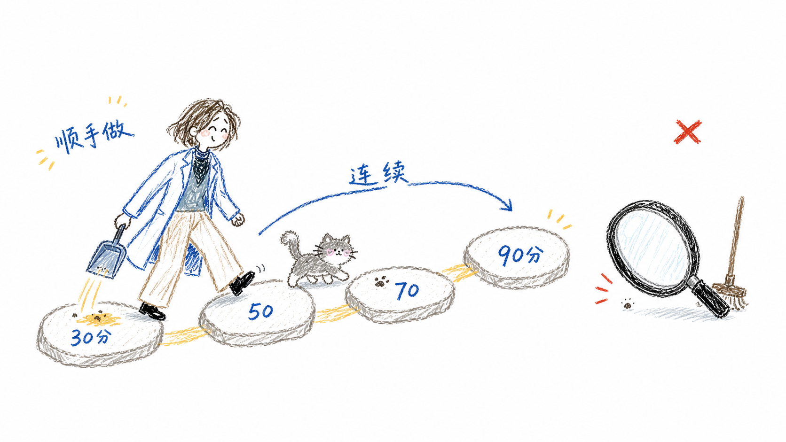
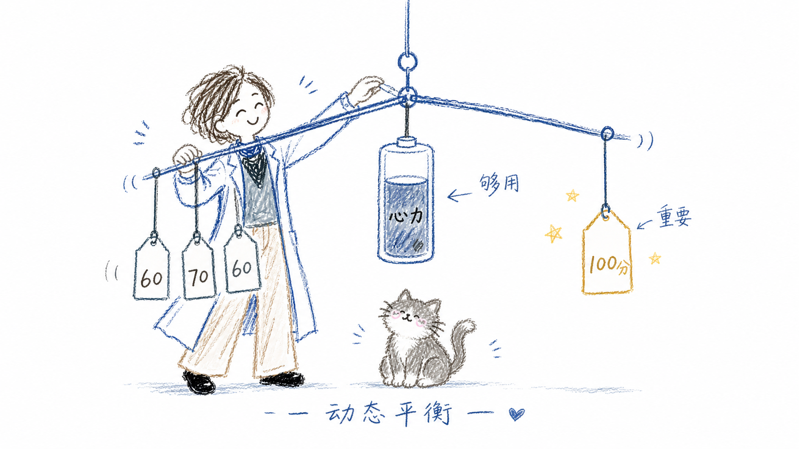

01 / 边际收益
从 70 到 100，
从 70 到 100，
可能只多一点点
生活中的很多事，都不值得投入 100 分去做。最后那一点精致，边际收益往往很低，却会消耗一个人的大部分心力。
30先让事情开始
70已经足够好用
100成本陡然升高

完美主义不总是勤奋，
它也可能是拖延的燃料。
内容已经够好，
发布却被小事层层卡住
有人做 UP 主，内容其实不错，却在剪辑、特效、封面和 BGM 上投入不亚于文本撰写和录制的时间。标准越满，发布越远。

不要等一次彻底，
先保住下一次行动
有的人要么不打扫，要么恨不得清除每一粒灰尘。这样的两极化会破坏行动的连续性。哪怕只是顺手做到 30 分，连续几天后也能接近 80、90 分。

你真正需要保护的，
不是一次满分，
而是明天还愿意继续。
04 / 选择性完美
多数事情够用，
多数事情够用，
重要的事情做到极致
时间和精力都有限。很多事情做到 60、70 分就足够；真正重要的事情可以投入 100 分——因为它只是多个任务里，被你主动选中的那一项。

把“满分”从默认值，改成选择题